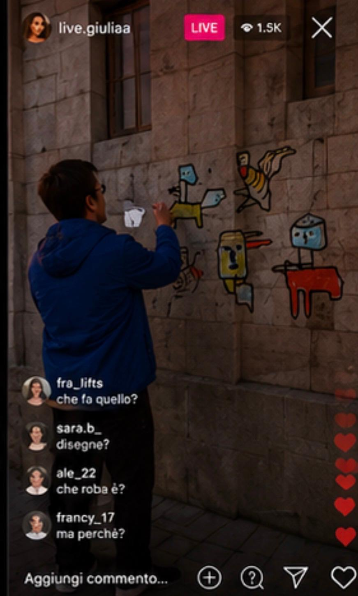

INFLUENCER
FRAME ACQUISITO

NOTA DI ARCHIVIO
Il soggetto viene registrato durante una sequenza breve, apparentemente ordinaria. Il gesto sembra appartenere al linguaggio dei contenuti social, ma il contesto urbano produce una distorsione.
Non è chiaro se il frammento sia volontario, intercettato o ricostruito. L’immagine mantiene un livello di esposizione anomalo e una distanza narrativa non compatibile con una normale ripresa promozionale.
La traccia viene archiviata come presenza pubblica non pienamente identificata. Nessuna interpretazione viene confermata.
data acquisizione: 25.05.2026
posizione: Bari / rete urbana
stato: aperto
livello rischio: basso
posizione: Bari / rete urbana
stato: aperto
livello rischio: basso
Il materiale non viene presentato come prova.
È una traccia, un residuo, un errore di superficie.
La visibilità del soggetto non coincide con la sua identificazione.